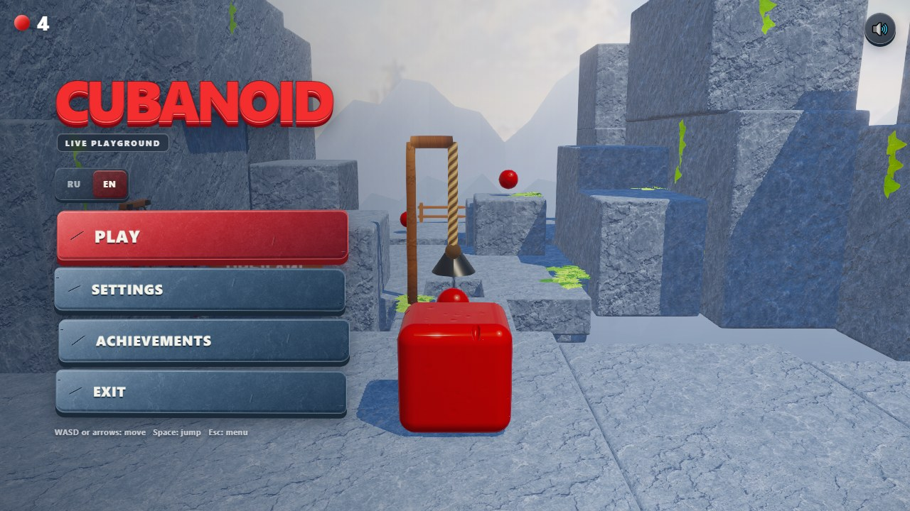
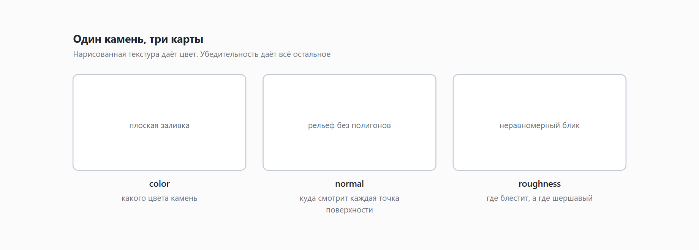
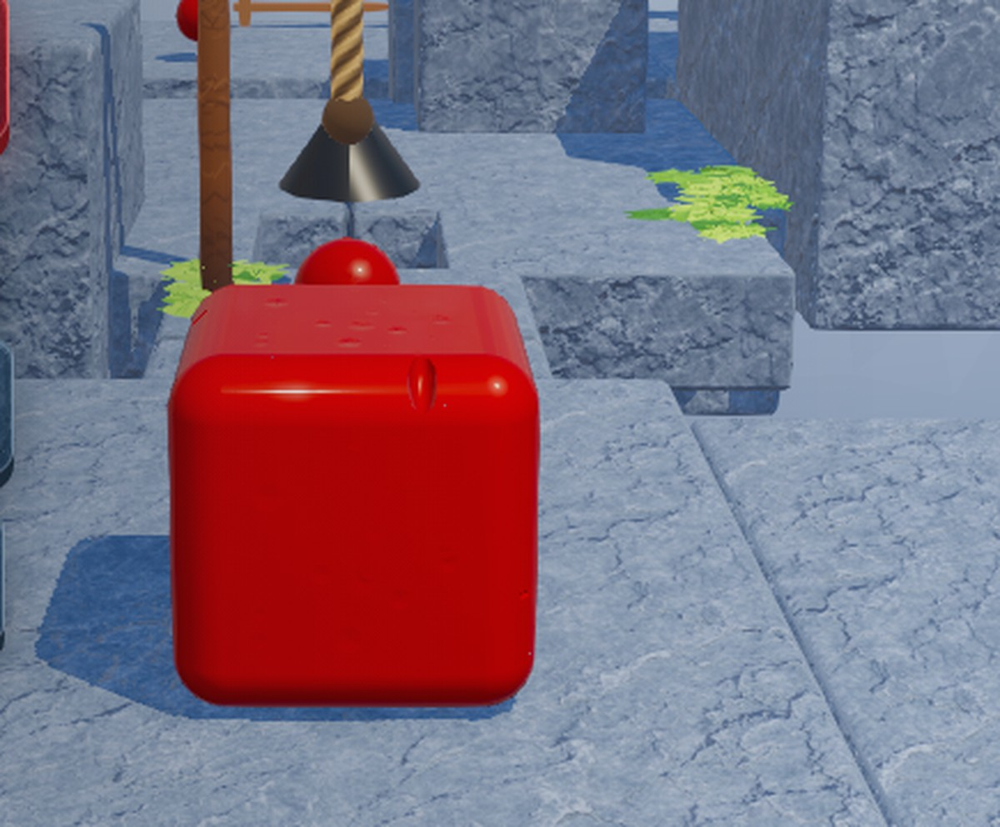
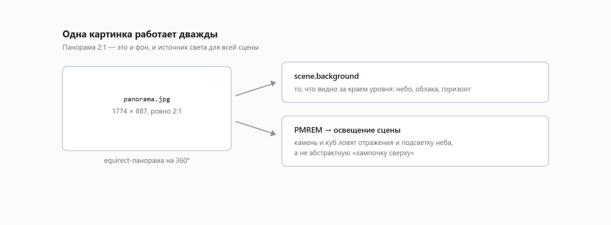
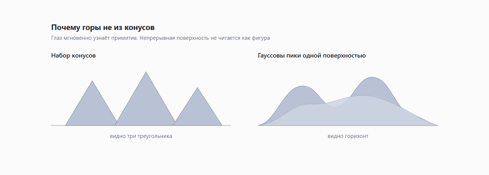
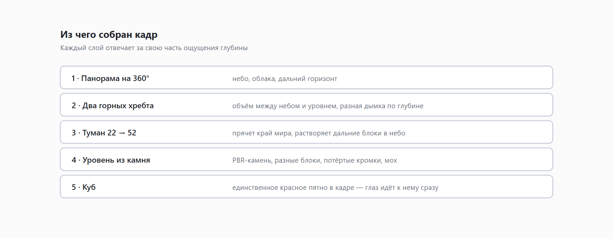

Апгрейд браузерной игры: добавляем реалистичность
Игре четыре дня. Ещё три вечера назад она выглядела как зелёные плитки с красным кубиком. Сейчас там камень, горы на горизонте и облака внизу.
Между этими состояниями - десяток попыток, из которых половина оказалась неправильной, а одна дорогая фича в итоге была почти выключена. Об этом и расскажу: не про то, как надо, а про то, что реально произошло.

Проблема, которую я не мог сформулировать

Вот кадр «до». Посмотрите на него внимательно - там нет очевидных ошибок. Трава есть, камень есть, тени работают, освещение стоит. Но выглядит как пластиковый конструктор, и это чувствуется мгновенно, ещё до того, как успеваешь понять почему.
Целый вечер я тыкал в отдельные параметры: подкручивал цвет, добавлял яркости, двигал источник света. Помогало плохо, потому что дело было не в них.
Настоящая причина простая и обидная: в этом кадре всё однородно. Каждая плитка похожа на соседнюю. Каждая поверхность одинаково гладкая. Свет ровный. За краем мира - пустота. Реальный мир так не выглядит нигде и никогда, и глаз это ловит быстрее, чем вы успеваете сформулировать претензию.
Дальше - пять вещей, которыми я эту однородность убивал.
Камень: одна текстура против трёх
Первое, что я сделал по-настоящему правильно, - перестал рисовать камень.
Раньше текстура генерировалась кодом: серые пятна, швы, немного шума. Выглядело прилично на скриншоте и разваливалось вблизи, потому что рисованное пятно - это просто цвет. У настоящего камня цвет вообще не главное.

Взял готовый PBR-набор с ambientCG - «Rock 030», лицензия CC0. Три карты:
- color - какого камень цвета;
- normal - куда смотрит каждая точка поверхности, то есть весь микрорельеф без единого лишнего полигона;
- roughness - где поверхность блестит, а где шершавая.
Именно вторая и третья делают всю работу. Normal заставляет свет ломаться на неровностях, roughness - блик не быть ровным пятном. Вместе они превращают плоскую заливку в поверхность, по которой хочется провести рукой.
Дополнительно каждая плита получила фаску в 0.055 - микроскопическую, но она ловит свет по кромке, и блок перестаёт выглядеть вырезанным ножом из бумаги.
Одинаковые блоки портят всё
Настоящий камень не бывает нарезан одинаковыми кубиками. Мой - был.
Требование прилетело от владельца проекта и звучало жёстко: соседние блоки не должны выглядеть одинаково. Я честно думал, что это придирка. Оказалось, это самое важное замечание за весь цикл.
Каждый блок теперь берёт три независимых случайных числа, посчитанных от его координат: сдвиг текстуры, оттенок и потёртость кромок. Ключевое слово - независимых: у каждого свой канал хэша. Когда я поленился и взял один источник на всё, блоки скоррелировали, и вместо разнообразия получился узор. А узор глаз ловит ровно так же быстро, как повтор - просто злится чуть позже.
И числа не случайные, а посчитанные от координат. Иначе уровень выглядел бы по-новому при каждой перезагрузке, а скриншотные тесты сошли бы с ума. Один и тот же блок обязан выглядеть одинаково всегда - просто не так, как сосед.
Куб: как я сделал его стеклянным и почти всё откатил
Вот тут самая честная часть статьи.

Куб - единственный по-настоящему яркий объект в кадре, и на него ушло больше всего коммитов: почти весь третий день я занимался одним кубиком. Я хотел желе: полупрозрачное, с глубоким внутренним цветом, чтобы свет проходил сквозь толщу и окрашивался.
Three.js такое умеет - параметр transmission, физически корректное просвечивание с преломлением. Дорогая штука: движок рендерит сцену за объектом отдельным проходом. Я его включил на 45%, получил желе и целую серию проблем: куб терял силуэт на светлом камне, теневая сторона уходила в чёрный, а на слабых машинах всё это заметно проседало.
Потратив на отладку почти день, я в итоге опустил transmission до 12%.
То есть почти выключил фичу, ради которой всё затевалось.
И картинка стала лучше. Потому что нужного эффекта добились три вещи попроще:
- глубокий тёмный красный в основе вместо весёлого алого - цвет перестал выглядеть пластмассовым;
- подсветка «мякоти» по краям - там, где мы смотрим на поверхность вскользь, куб чуть светится изнутри. Это дешёвый трюк, который читается именно как «внутри что-то есть»;
- вмятины на поверхности - не идеально гладкий, а слегка мятый, как настоящая мармеладка.
Мораль, которую я записал: физически корректное решение не обязано быть лучшим визуально. Иногда три дешёвых приёма дают то же ощущение, а стоят вдесятеро меньше.
Почему бликов должно быть два
Отдельная история про блеск.
Один блик на объекте выглядит как метка «тут пластик». В реальности блестящие предметы почти всегда дают два отражения: широкое от самой поверхности и резкое от верхнего слоя - лака, влаги, полировки.
У куба поэтому включён clearcoat - второй, более гладкий слой поверх основного. Основная поверхность шершавая и даёт мягкий отсвет, лак сверху - острую точку. Разница между ними и создаёт ощущение материала, а не покрашенного куба.
Тут я, впрочем, знатно наступил на грабли. Небо у меня отражается во всех поверхностях, и синее небо на почти горизонтальной верхней грани красного куба дало... мадженту. Куб сверху был фиолетовый. Лечилось снижением интенсивности отражений втрое - и то не сразу, потому что специальный блик и clearcoat в Three.js используют один и тот же параметр, и «чуть-чуть подкрутить» не выходит.
Фон: одна картинка работает дважды
Самая выгодная правка этого цикла - и одновременно самая незаметная, пока не уберёшь.
Раньше за краем уровня была пустота: градиент, туман, ничего. Мир заканчивался там, где заканчивались плиты, и это читалось.

Теперь там панорама на 360 градусов - облачный мир, снятый в равнопромежуточной проекции. И вот что в ней приятно: она работает дважды.
Во-первых, это фон. Во-вторых - источник света для всей сцены. Камень и куб получают отражения и подсветку не от абстрактной лампочки, а от того самого неба, которое видно в кадре. Свет и фон автоматически согласованы, потому что это физически одно и то же.
Побочный эффект, о котором меня никто не предупреждал: панорама обязана бесшовно смыкаться по горизонтали. Стык левого и правого края пришлось проверять попиксельно - иначе в мире появляется вертикальный шрам, и заметишь ты его ровно тогда, когда повернёшь камеру.
Горы не бывают из конусов
Между небом и уровнем всё ещё была дыра: панорама далеко, плиты близко, а между ними ничего.
Очевидное решение - накидать гор. Первый порыв: расставить конусы, покрасить в серый, добавить дымки. Так делают в туториалах, и это не работает.

Не работает, потому что глаз мгновенно узнаёт примитив. Конус остаётся конусом, даже покрашенный и в тумане: видно три треугольника, а не горную гряду.
Вместо этого каждый хребет - одна непрерывная поверхность, на которой широкие плавные пики переходят друг в друга. Никаких отдельных фигур: есть ломаная линия горизонта, которую невозможно разложить на детали.
Хребтов два, разнесённых по глубине, и у дальнего дымка сильнее. Это старейший приём в живописи: чем дальше, тем бледнее и синее. Две строки настройки, а глубина появляется настоящая.
Что всё это дало вместе

Ни одна из этих правок по отдельности не была решающей. Работает именно набор: панорама даёт мир, горы - объём между небом и землёй, туман прячет край, камень даёт поверхность, а куб остаётся единственным красным пятном в кадре, к которому глаз идёт первым.
Последнее, кстати, вышло случайно и оказалось самым ценным. Пока сцена была пёстрой, куб терялся. Когда мир стал серо-голубым, красный кубик стал видно отовсюду - и это не украшение, это игровая читаемость. Игрок всегда знает, где он.
Три вывода, если совсем коротко:
Реализм - это неоднородность. Одинаковые блоки, ровный свет и гладкие поверхности убивают его быстрее, чем что-либо ещё.
Физическая корректность не равна красоте. Дорогая фича, которую я почти выключил, - лучшее тому доказательство.
Мир должен продолжаться за краем уровня. Панорама и горы сделали для ощущения места больше, чем все материалы вместе взятые.
А у вас какая правка неожиданно вытянула картинку сильнее всего? Подозреваю, что у многих это тоже оказался не шейдер.